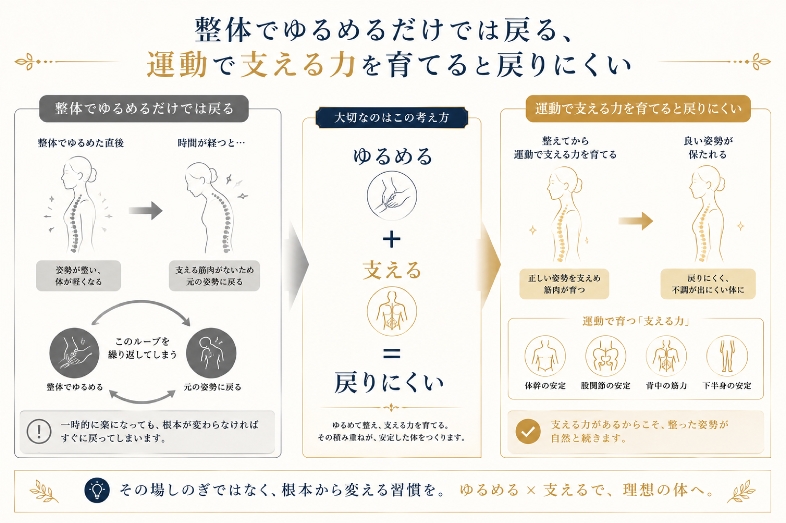

整体やマッサージに行った直後は身体が軽い。でも数日でまた元通り——「整体でもすぐ戻る」「肩こりを繰り返す」という経験、ありませんか。これは施術が悪いわけではありません。戻るのには、はっきりした理由があります。この記事では、なぜすぐ戻るのか、そして戻りにくい身体をどうつくるかを解説します。
整体でもすぐ戻る、3つの理由
① 支える筋肉がないから
整体は硬くなった筋肉をゆるめて、一時的に楽な状態にしてくれます。ですが、その良い状態をキープする筋肉がなければ、身体は楽な"元のクセ"に戻ろうとします。ゆるめるだけでは、支える力が育たないのです。
② 姿勢のクセが変わっていないから
猫背や巻き肩など、長年の姿勢のクセは日常のあらゆる動作に染み込んでいます。施術でその場は整っても、翌日から同じ姿勢で過ごせば、同じ負担が同じ場所にかかり続けます。
③ 日常動作が変わっていないから
デスクワーク、スマホ、荷物の持ち方——不調を生む日常動作が変わらなければ、いくらケアしても追いつきません。戻る原因を日々つくり続けている状態です。

戻りにくい身体は「運動」でつくる
結論はシンプルです。身体を支える力を運動で育てること——これが戻りにくい身体の土台です。正しい姿勢を保つ筋肉が育つと、良い状態が「日常の標準」になっていきます。多くの方は、この運動（トレーニング）からしっかりスタートできます。
そのうえで、姿勢の硬さやクセが強い方は、必要に応じて整体的なケアで土台を整えてから運動に入ると、より効率的です。私たちが運動を軸に整体も取り入れるのはこの理由から。ただし整体は全員に必要なわけではなく、その人の状態に応じた手段の一つです。主役はあくまで、あなた自身が動ける身体をつくることです。

本当の目的は「不調をなくす」ことではない
もう一歩踏み込むと、肩こりや不調が取れることはゴールではなく通過点です。本当に目指したいのは、身体が軽く、思い通りに動き、ダイエットやボディメイクで理想の体型に近づき、毎日を健康的に動ける状態になること。不調の解消は、その入口にすぎません。整体で戻る・戻らないの話も、最終的には「動ける身体をつくる」という目的の中の一部です。
TOKOWAKAの考え方——運動を軸に、必要な土台づくりを
私たちの主軸は運動です。ボディメイクやダイエット、健康的に動ける身体を叶えるために必要なトレーニングを、怪我なく一歩ずつ積み上げていきます。多くの方は、そのままトレーニングからしっかり始められます。その一方で、姿勢や身体の状態から土台づくりが必要な方には、整体的なアプローチも取り入れます——全員に必要なわけではなく、あなたに本当に必要なものを見極めて正しく提供する、という考え方です。完全個室・マンツーマンで、運動が苦手な方も人目を気にせず取り組めます。
整体に通っても戻ってしまうと感じているなら、足りないのは「支える力」かもしれません。まずは0円の体験で、あなたに何が必要かを一緒に確かめてみませんか。
よくある質問
整体に行ってもすぐ戻るのはなぜですか？
肩こりを繰り返すのを根本から改善するには？
整体と運動はどちらを優先すべきですか？
運動が苦手でも姿勢や不調は改善できますか？